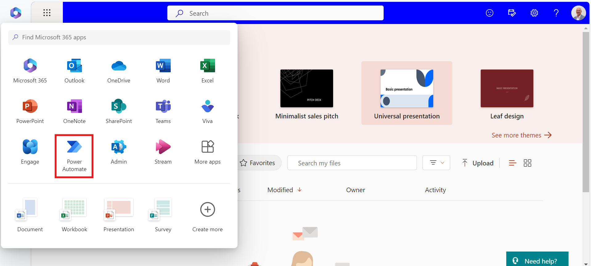
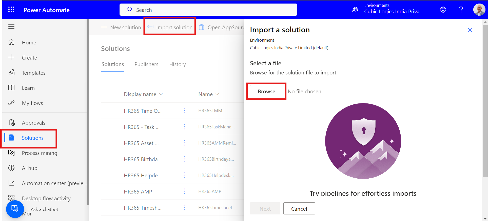
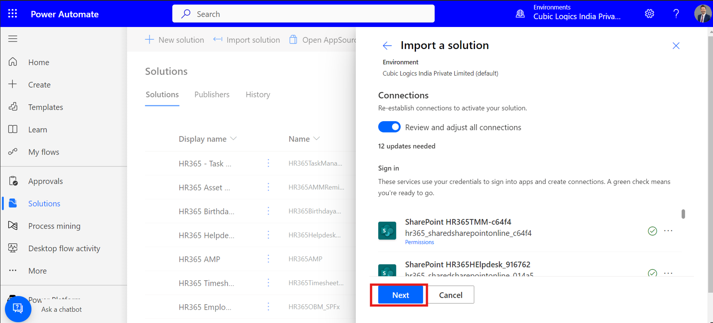
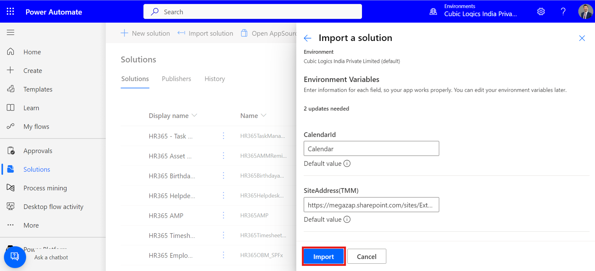
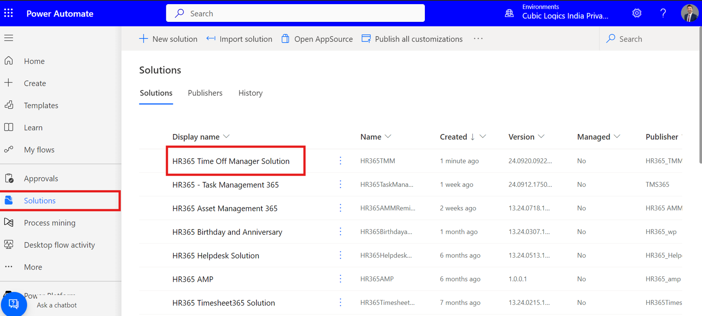
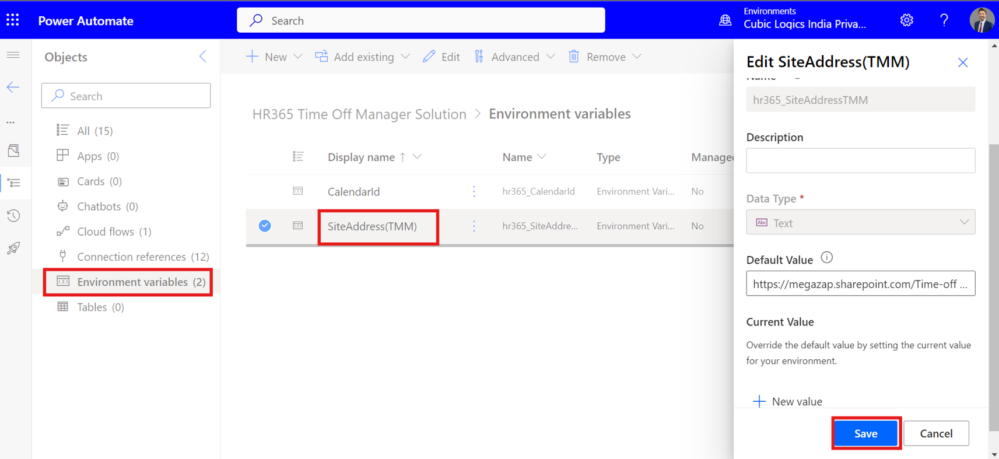
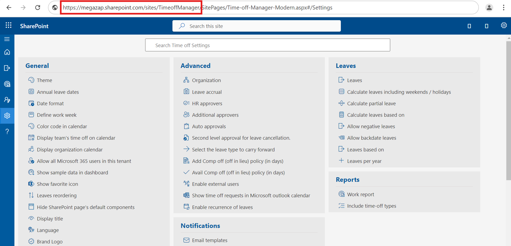
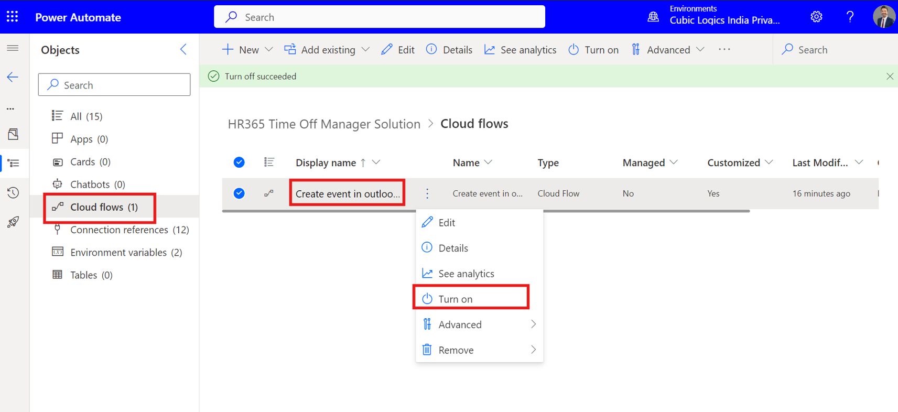
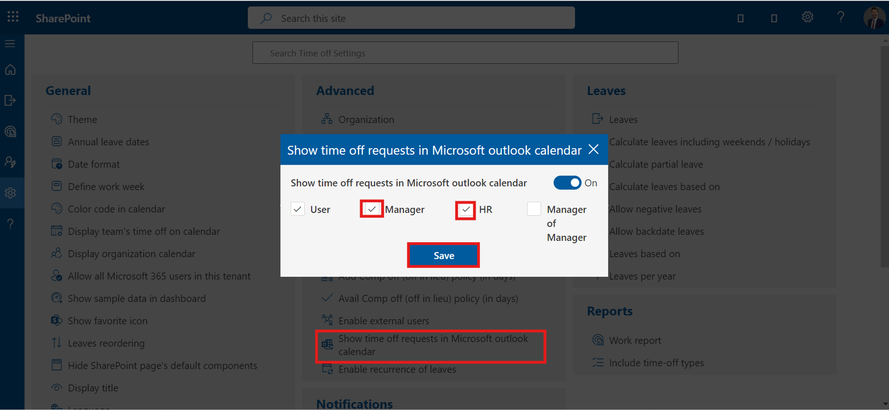
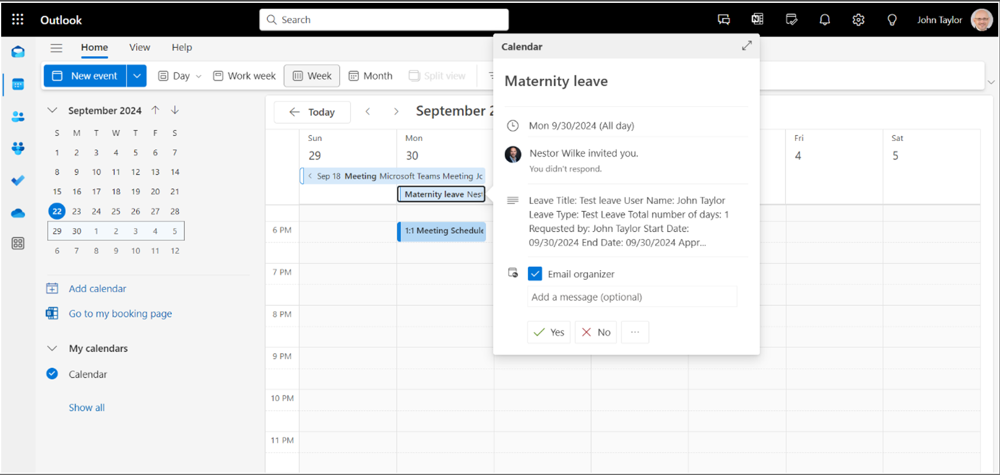

Show time off requests in the Microsoft Outlook calendar
Steps to create a power automation solution
- The person configuring Power Automate must have a valid PowerAutomate license. Click here to download the solution and select 'PowerAutomate' from the app launcher.
- Import the downloaded solution as shown below and click next.
- Choose the connections for the logged-in user from the dropdown list and select import.
- Select the imported solution named ‘HR365 time-off Manager solution’.
- Navigate to the left-hand side navigation panel, select 'Environment variables,' and then click on the 'Site URL' variable. Replace the default value with your application's site URL.
- Copy the application site URL up to 'site name' and paste it into the default value field.
- In the left navigation panel, navigate to 'Cloud flows.' Enable the ‘create event in outlook’, as illustrated in the image.
- To enable the "Show time off requests in Microsoft Outlook calendar" and declare the setting for who can see user leaves in the M365 calendar, follow these steps:
- To verify the setup, test it by having a user submit a leave request, and then approve the request as a manager. Once the manager approves the leave, it will appear in the M365 Outlook calendar.









